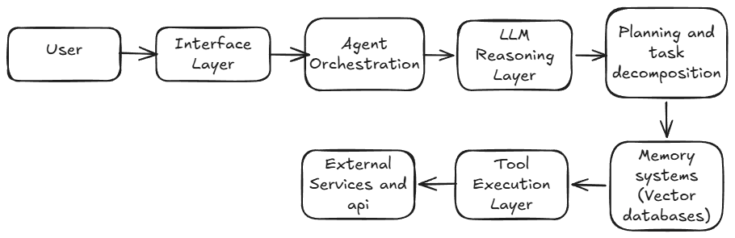

Introduction
Software has evolved from passive tools to intelligent assistants. With recent advances in artificial intelligence, a new paradigm is emerging: Agentic SaaS, where software systems are capable of planning, reasoning, and executing tasks autonomously. Instead of merely responding to user commands, these systems behave like digital agents that can analyse problems, make decisions, and interact with other software systems. SaaS (Software as a Service) is a cloud-based software delivery model where applications are accessed through the internet rather than installed locally on a device.
Characteristics:
1) Easily accessible through browser via API
2) Subscription based
3) Managed by the provider itself
What are AI agents?
An AI agent is a software system that can perceive information, reason about it, and take actions to achieve a specific goal. Its core capabilities include perception, reasoning, planning, and acting. For example, when a user asks an AI system to “summarize notes and explain concepts in simple language,” the agent first gathers the input (perception), processes it using language models (reasoning), plans the required steps, and then generates the final output.
Goal: "Summarize these notes and explain the concepts in simple language."
Step 1: Fetch data
Step 2: Analyse documents
Step 3: Read the topics
Step 4: Generate summary in simple language
What is Agentic SaaS?
Agentic SaaS is a cloud-based software model in which AI agents autonomously perform tasks and complete defined goals on behalf of users. In this model, software behaves more like a digital employee rather than a passive tool. “Agentic AI systems are emerging as the next stage of software automation.” — Microsoft Research, The Era of AI Agents, 2024.
Architecture of AI agentic Saas
Agentic SaaS systems integrate cloud software with AI agents that have the ability to plan and execute tasks autonomously. Unlike traditional SaaS, where users have to manually execute each process, agentic SaaS enables users to set a goal while the system executes the workflow. Agentic SaaS architecture is composed of multiple levels. First, there is the interface level, which enables user interaction through APIs or chat. Next is the orchestration level, where tools such as LangChain or CrewAI assist with tool execution. Third, there is the reasoning level, where AI agents such as GPT-4 or Llama interpret user goals. Finally, there is task decomposition, where tasks are broken down. Agentic SaaS utilizes memory, including short-term context and long-term memory using vector databases such as Pinecone or Weaviate. There is also a tool execution level, which enables AI agents to interact with external tools such as APIs, databases, or services. There is also collaboration between multiple agents, where multiple agents collaborate to accomplish tasks. All these components run on cloud platforms such as Amazon Web Services or Microsoft Azure, enabling software to autonomously manage complex workflows.

Challenges of agentic SaaS:
Despite the power of Agentic SaaS systems in providing automated tools, there are also several challenges that need to be faced. One of the major challenges is that of reliability, as the AI agents using GPT-4 or Llama may sometimes be incorrect in their responses or may misunderstand the tasks given to them. Another challenge is that of security and data privacy, as the system utilizes several APIs and sources for data. This makes the system vulnerable to data breaches or incorrect actions. Furthermore, there is also the challenge of cost and infrastructure, as the system requires high computational power to run in real-time, which may be possible through cloud platforms such as Amazon Web Services or Microsoft Azure. Finally, there is also the challenge of governance and control, as autonomous agents must be monitored for safe decision-making.
Real world impact:
| Domain | Top AI-Agent SaaS Apps | Agent Role & Benchmarks |
|---|---|---|
| CRM/Sales | Salesforce Agentforce, HubSpot AI | Lead qualification, personalized outreach; 30% faster closes, $36B Salesforce revenue. |
| Customer Support | Zendesk AI, Intercom Fin, Kore.ai | Autonomous ticket resolution; 80% self-serve rate, saves $1.5M/agent annually. |
| Productivity | Notion AI, Slack Agentforce | Meeting summaries, task orchestration; 25%-time savings, 50M Notion users. |
| Marketing | Jasper AI, Klaviyo Agents | Content gen, campaign optimization; 150% engagement lift. |
| Project Management | Jira Copilot, Linear Agents, Asana Intelligence | Sprint planning, issue triage; 40% faster delivery. |
| HR/Recruiting | Workday Agents, Beam AI | Resume screening, interview scheduling; 20% churn reduction. |
| Finance | QuickBooks AI, Xero Agents | Invoice automation, forecasting; 15 hrs/week saved. |
| DevOps | GitHub Copilot Workspace, Devin | Full app builds from prompts; 55% code boost, 100M devs. |
| E-commerce | Shopify Magic, BigCommerce Agents | Inventory prediction, recommendations; 20% conversion up. |
| Education | Canvas AI Agents, Duolingo Agents | Personalized quizzes, grading; 35% retention gain. |
AI agents benchmarks
| Agent | GAIA L3 Score | Resolution Rate | Speed (Complex Task) | Cost/Student Tier |
|---|---|---|---|---|
| Kore.ai | 55% | 80% tickets | 2-3 min | Free marketplace |
| CrewAI | 45% | 70% workflows | 5 min (multi-agent) | Free/open-source |
| Devin | 40% (SWE) | 85% code tasks | 10 min full app | Edu trial |
| Gumloop | N/A (no-code) | 75% automations History | 1-2 min | Free tier |
| Action Agent | 61% | High reliability | Minutes (business) | Enterprise |
Conclusion
In conclusion, Agentic SaaS represents a significant shift in modern software systems. By combining advanced AI models like GPT-4 and Llama with cloud technology, these systems can plan, reason, and act autonomously. With capabilities such as memory, tool integration, and multi-agent collaboration, they transform software from passive tools into active problem-solving systems. Despite challenges like reliability, security, and governance, ongoing advancements in AI and cloud computing are addressing these issues. As adoption grows, Agentic SaaS is expected to play a key role in shaping future digital products and enterprise workflows.
Glossary of Key Concepts-
1) LangChain: An open-source framework for building applications powered by large language models, especially AI agents that interact with tools and data.
2) CrewAI: An open-source framework for orchestrating multiple AI agents and automating workflows.
3) Orchestration Layer: A system that coordinates components such as APIs, data pipelines, and AI models into automated workflows.
4) Pinecone: A vector database used for storing embeddings and enabling semantic search.
5) Weaviate: An open-source vector database that supports semantic search by storing both data and vector embeddings.
6) GAIA: A benchmark for evaluating AI agents on tasks requiring reasoning, tool use, and web interaction, with increasing difficulty across three levels.
7) Resolution Rate: The percentage of customer issues or support tickets successfully resolved within a given time period.
Citations-
• “AI agents integrated into SaaS platforms could significantly transform how organizations purchase and use enterprise software.” — Deloitte Insights, SaaS Meets AI Agents, 2025
• “Salesforce is one of the leading enterprise SaaS companies providing cloud-based CRM and business solutions.” — Forbes, Salesforce Company Profile.
• “Agentic AI platforms enable autonomous agents to reason, plan tasks, and interact with external tools to complete complex workflows.” — Kore.ai, 7 Best Agentic AI Platforms.
• “Benchmarks evaluating AI agents measure their ability to reason, use tools, and perform multi-step tasks autonomously.” — AI Multiple, AI Agent Performance Benchmarking.
• “AI-powered chatbots can significantly reduce operational costs while improving customer support efficiency.” — Gleap, AI Chatbot ROI Benchmarks for SaaS.
• “GAIA is a benchmark designed to evaluate AI agents on tasks requiring reasoning, tool use, and web browsing capabilities.” — Princeton University, GAIA Benchmark for General AI Assistants.
• “Resolution rate represents the percentage of customer queries successfully resolved within a support system.” — Decagon AI, What is Resolution Rate?